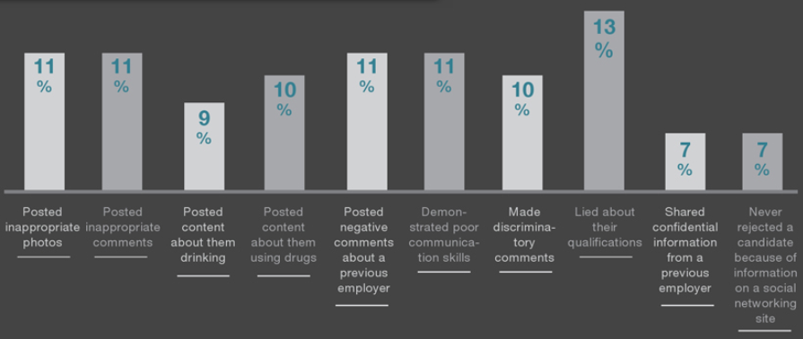
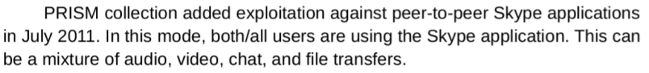
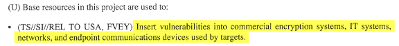
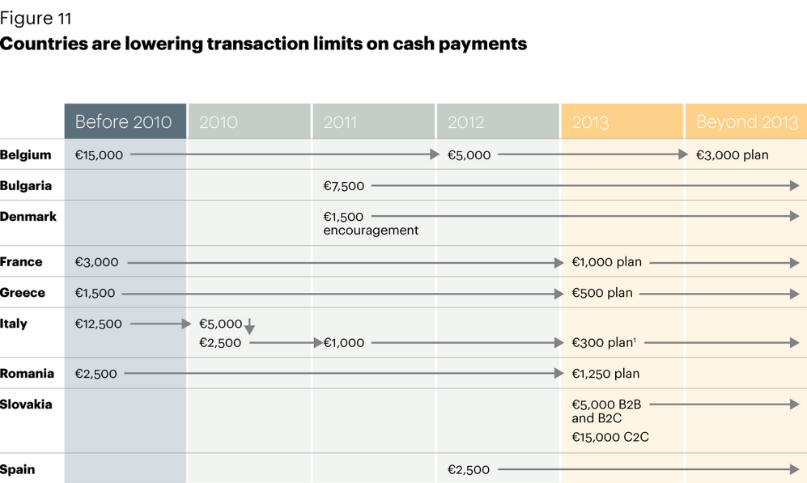
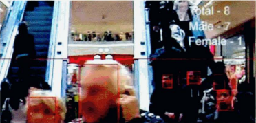

Technology is inseparable from civilization. It has changed the world forever. Thanks to it, we can, for example, send information to the other end of the world in seconds; talk to people with other continents; travel to any place in the world in one day; store thousands of photos on a drive the size of your thumb; create virtual realities, as well as do a bunch of other things that no one would have imagined just 100 years ago.
But technology has its bad side too. In the current world, it is controlled by organizations who do not have our best interests in mind. They will not hesitate to use technology's great power against us. Spying on, and analyzing, our communication; control of the information we receive; emotional manipulation; modification of behavior - those are just a few things technology is being used for these days. All that with more coverage, accuracy, effectiveness and with less human effort. If this "progress" is not stopped, we will end up in a prison that we wouldn't find in our worst nightmares.
I will attempt to describe the way the most important technologies of today contribute to the creation of a global system of control. I will also mention a few technologies of the future, and try to connect all the information together and predict the fate of this world. Let's start with one of the inventions that affect people the most - The Internet.
Every connection, for example sending a message, or entering a website, goes through your Internet Service Provider, before it reaches the target. In theory this means ISP's can freely spy on and modify everything you do on the Internet; for example - slow down or block the downloading of torrents; inject advertisements to your visited sites http://zmhenkel.blogspot.com/2013/03/isp-advertisement-injection-cma.html (archive), or even create a massive censorship system, like the so-called "Great Wall" of China.
The most common usage of the Internet is browsing websites, for which we use a web browser such as Mozilla Firefox, Internet Explorer or Google Chrome. These three "giants" pretty much exist to collect data on their users. Google at least admits to it - on the other hand, Mozilla pretends to care about your freedom and privacy, but actually spies on you and controls you. It's been a few years since Mozilla decided they will decide what add-ons you can and cannot install - apparently to "protect the users", but nothing stops them from, for example, disabling AdBlock. Mozilla has worked with advertisers for a long time - they've even shown them in your New Tab panel: https://blog.mozilla.org/advancingcontent/2015/05/21/providing-a-valuable-platform-for-advertisers-content-publishers-and-users/ (archive). The myth of Firefox "respecting the user" has died and will not resurrect. Just read a certain reply from their website: Our products do not interrupt the browsing experience; they catch users when they are most receptive to seeing new information.
So, for them, you are simply prey to be caught for the purpose of having advertisements be shoved into your brain. Despite that, they still spew slogans about "respect and freedom". I could spend the whole article on pointing out all the ways popular web browsers exploit you. Opera, for example, literally spies on your whole web history without your knowledge. The three giants mentioned earlier also spy on you, but in some other ways.
Almost every big website works closely with the police / government and will happily share data about you with them - for example, the IP address of the computer you made a forum post from. Exception, such as Lavabit, (interesting story by the way - you can read it on the Internet) or The Pirate Bay, have their servers raided.
Lately, it became fashionable to store your data "in the cloud", for example Dropbox or Google Drive. This is really helpful to the elites - they can now see and analyze your files, which can give them information about your interests or plans (which could be used against you). One guy from 4chan was storing bomb making instructions on Dropbox, only to find that, one day, they have been deleted. The Internet is full of cases like that, and they're not all about bombs. Thus, we can see that your data isn't safe on these cloud "services" - it ceases being yours. Most likely, in several years, wanting to keep your data on your own drive will be considered "abnormal" - and cloud storage will be the standard - like it is today with cash vs bank accounts, for example. This will open the door to complete control of your stored data, automatically blocking materials about, for example, the aforementioned bombs. Another, maybe more plausible option, would be punishing the people who upload such files - like film producers did with people downloading certain torrents.
How do most people find information on the Internet? Using Google, of course. But Google is something more than just a search engine - it's a corporation whose aim is gathering as much data as possible and creating a profile about you. Their spy scripts (for example, google analytics) exist pretty much on every site - you could even not know what Google is, but still be spied on. That data is then used to, for example, show you targeted advertisements, but also different search results. So a Christian searching for "abortion" will see something else than an atheist.
Google went further and invented a new algorithm for displaying search results. The sites who are, according to them, based on "facts" will be higher up. On the other hand, those who contain untrue information (again, according to them) will be further down. One of the ways Google rates the truth value of sites is comparing them with the articles on Wikipedia. And since we know how Wikipedia treats conspiracy theories, we can assume they will pushed away by official versions of events. Soon, when we search for something like "genetically modified organisms" we will only get "prepared" information. Google's invention could become one of the most effective tools of censorship and opinion control.
Google also controls other common services. One of the most popular is YouTube, which they've been "reforming" since they bought it. I was surprised when a few years ago I couldn't log in to my YouTube account without making a Gmail account. I didn't want their e-mail (which spies on you) so I said goodbye to YouTube. I didn't use it much, but still.
Another YouTube reform is called Content ID. It is supposed to protect copyright. The creator of a movie or song can share their creation with Google, which will then compare it with every other file on YouTube. If it considers one of those files close enough to the submission, it will either delete that file, remove sound from it, or add advertisements.
Before Content ID was invented, someone who thought that a movie violates copyright, had to send YouTube a form, which could be accepted or not. These days though, they have a much easier way called Content ID, which allows them to earn money if it finds some similarities. You can theoretically appeal a Content ID decision, but it is pointless since the appeal will be decided by...the same company that uploaded the file. Many frustrated people are complaining in internet comments, saying that Content ID is terrible, that it made a mistake with their movie, that they're stealing their money, that they have lost their files or their account. There've been debates about copyright and AI in general. Some people have said that movie or music creators should be happy to have their content shared on YouTube. But these discussions can exist only because Content ID happened. Without it, people could freely share their movies without them being possibly modified / deleted by automatic analysis.
A similar program could be used to delete movies about undesirable topics. Even now YouTube is deleting "racist", "nationalist", "insulting" films - even if often that is just an excuse; but they have to do it by hand. If they put together Content ID with the site sorting algorithm, they could create a system that deletes certain content automatically. A more advanced form of that algorithm could even delete certain parts of movies which have undesirable topics (for example, deleting a few second long part with a racist slur). It would work similar to the profanity filters on forums. But it would not be limited only to that - Google has shown, that they're very insterested in controlling your beliefs, when they've created the site sorting algorithm I've spoke about earlier. A tool that could detect where in your movie an undesirable topic is mentioned, and replace it with their modified version, would be very welcome in their arsenal.
You could write a whole book about Google; I don't want to do it - but I have to briefly mention some other things they've done. Recaptcha is the most popular way to defend forums from spambots. If you wanted to write something on a forum with recaptcha, you had to type a certain word. You didn't always get a word, though - you could get something like a street address, which would then get added to Google StreetView, which allows spying on people. For years, anyone who wrote on 4chan, was filling their database with street addresses, not necessarily knowing about that. What really is StreetView? Google cars travel the world taking pictures of everything and everyone. Then they put these photos in their database, which can be searched by anyone. Google has access to pictures of the whole Earth, pretty much - and even to history of the places people search for using their maps. What could that information be used for? You can read on Wikipedia that a lot of countries had a problem with StreetView. They thought it intrudes on the citizen's privacy. But after "consulations" they've all agreed to allow it. Isn't this evidence that we're dealing with a worldwide plan to spy on people?
They've changed ReCaptcha since I wrote the above. Now, you get a set of pictures and you have to choose the ones containing a certain item, for example hamburgers. This is used to train Google's artificial intelligence, which will also probably be used against us in the future. I will finish this section with a quote from Google We don't need you to type at all. We know where you are. We know where you've been. We can more or less know what you're thinking about.
One of the most popular internet sites these days are social networks, such as Facebook or Twitter. People flock to them like flies, filling their database with information such as name, surname, phone number, place of work, interests, and friend lists. They don't have a problem with sharing their political opinions. Facebook makes it really easy, since the "Like!" button appears on most popular websites, and clicking it sends information to Facebook about the article you liked. How could they use that information? For example, for showing targeted advertisements. A few years ago, Facebook promised that it would never do that - but then changed their mind and it is now a reality. Some of these advertisements can be insulting - for example, a person suffering from cancer, after searching for information about it on the internet, was shown ads about...burial services! http://www.naturalnews.com/049386_Facebook_privacy_surveillance.html (archive)
Comments written on these social networks are even more dangerous. They are attached to your real name, and whoever finds your account can read them. What could be the effects of that? You could lose your job or be arrested. Some examples:
We could be focusing on singular situations - was someone punished appropriately or not? You could even blame the victim. But the logical thing to do is to look at the whole issue from afar. If these comments were made in person, and not on the internet, no one could get in trouble. The possibility of punishing someone is the consequence of the technology that attaches the things you post to your name. After years of using social networks, you could find something on anyone, even if he did not think that the message he's writing would give him problems later.
300 employers were asked whether they've checked the profiles of their would-be recruits, and 91% agreed. 69% dismissed an employee because of something he had in his profile. Some of the offending things were: negative opinions about previous employers, photos of using drugs or drinking alcohol, or "inappropriate" photos.

There are also more direct ways that the social networks can affect you. In 2014 Facebook did a psychological experiment that was supposed to show that you can control human minds without knowning them personally, and without their knowledge. 689003 people (who weren't aware of being lab rats) were divided into two two groups - one of them was shown only content generating positive emotions, the other - only negative. The more positive content someone saw, the more positively he himself responded. The differences were small, but maybe they could be increased with more drastic measures. For example, showing someone articles about murders or kidnappings. You could also target the content someone was going to be shown individually - based upon the things he's written in his profile, or his browsing history (which Facebook collects through the "Like!" buttons). If someone reads a lot of anti-government websites, they would be shown articles about the government doing something bad. Or an anti-GMO person would be shown information about GMOs being legalized somewhere. It is plausible that this experiment opened the door to just this kind of thing. You can read the whole experiment here: http://www.pnas.org/content/111/24/8788.full (archive)
Facebook also uses an algorithm for detecting faces on photos and automatically adding a name to them. http://www.dailydot.com/technology/facebook-deepface-science/ (archive). If your name is on at least one photo, every other photo with your face could be detected as you.
More and more human communication is done electronically. This has the same problem as bank accounts - you pay for a basic human need. But that's not the most important. A human talking eye to eye is spontaneous. He knows only the person he's talking to can hear him. Then he brings that attitude towards talking in the phone, which follows different rules - all data about when, where, and to whom you made the call is stored in the provider's database. In most countries the police has access to the data if they have the court order. But in Great Britain - the leader of electronic spying - three of four most used providers send all their data to police in real time: https://www.theguardian.com/world/2014/oct/10/automatic-police-access-customers-mobile-phone-records-like-cash-machine-ripa-three-ee-vodafone/ (archive). The implications are enormous - the same organization (the police) who can fine or punish you, now has access to all your phone calls. People have been locked up for SMS messages before, but usually they had to physically search their phones. This requirement disappears with the automatic system of sending messages to police.
The same is true of internet communication. Most people use common tools like Gmail or Skype. In one of his leaked documents, Edward Snowden revealed that the NSA (National Security of America) has a program called PRISM, with which those companies cooperate. Since 2011, Skype gives access to your conversations to the NSA, including video recording:
.
Of course, we could use less popular software with an encryption capability, but would that protect us from spying?
David Cameron, the prime minister of Great Britain, came up with an idea to ban encryption, arguing that "There should be no means of communication, which we cannot read". Many people laughed, saying that the government would have to delete encryption software from people's hard drives (and would that really be a problem for them? Malware exists, you know). Others thought that they can't implement it, because it would make banking and such insecure. But this looks more like a desperate way to dismiss the possibility that, in the near future, all our conversations done electronically will be spied on by the government.
In another leak of NSA's documents, it was shown that they want to reduce the effectiveness of common encryption:

You don't need to work with a software's creator to spy on our conversations, though. Even in open source software (that anyone with enough knowledge and dedication can inspect), there still happen bugs that can weaken the encryption. For example, OpenSSL, the most popular library encrypting our communications with websites, for 1.5 years had a bug allowing to download a small amount of data from the memory of the server that it's used on, and that data could include passwords and encryption keys. NSA, of course, took advantage of that: https://www.bloomberg.com/news/articles/2014-04-11/nsa-said-to-have-used-heartbleed-bug-exposing-consumers (archive) Another example: Cryptocat screwed up the implementation of an encryption algorithm, which allowed anyone with enough capability to decrypt communication made with it. And NSA has these capabilities - they also save all encrypted communications, so they can decrypt it later.
And they will most likely succeed - there is a huge chance that quantum computers will make all current ciphers irrelevant - https://hackaday.com/2015/09/29/quantum-computing-kills-encryption/ (archive) - so private conversations will be a thing of the past. Add to that voice recognition software, and we're finding ourselves in a world where all our conversations are searched for certain phrases (by a program similar to Content ID I've talked about earlier).
Cash payments are more and more often being replaced by electronic ones. People like the comfort of being able to order anything you want and pay for it with a few clicks. Having a bank account is something normal these days, even required. But behind the curtain hide gigantic implications for human privacy and freedom.
Let's start from the basics - what is electronic money? It's a number in a database on a server belonging to the bank you're using. Your ability to buy anything is dependent on how big that number is - and since humans have to, for example, eat - your life depends on it. How much electronic money you have is dependent on a lot of things you can't affect - just using a bank account costs money, so participating in this system means you automatically lose money.
A bank can eat much more of your money - even without taking into account hacking attacks like this: https://thehackernews.com/2016/05/swift-banking-hack.html (archive), where the hackers stole 12 million dollars. One guy from Cyprus got 720 000 Euros stolen by the european commision to pay off Cyprus' debt. He had to fire all his Cyprus employees and move to another country. First, the sum was displayed as "blocked", then they deleted it altogether from his account. And, as he himself says, Thousands of other companies around Cyprus have the same situation.
This shows how much you can rely on a number in a database - all it takes is one thought in someone's mind, and it's gone. Read more about this topic here: https://bitcointalk.org/index.php?topic=160292 (archive)
Another problem with electronic payments is the fact that they are anti-privacy. All your transactions are stored in the bank's database. And the people controlling the bank can use it against you - blocking unwanted transactions, such as buying bitcoins http://www.coindesk.com/dutch-bank-rabobank-blocks-bitcoin/ (archive) or donations to WikiLeaks: http://www.bankrate.com/finance/credit-cards/naughty-things-credit-card-wont-buy-6.aspx (archive). It's easy to imagine a world where all your transactions are analyzed and automatically blocked according to a list of banned items.
Paper money does not have that problem. It will not disappear from your pocket. There is no central point that stores information about your transactions. You can't "turn someone off" if he pays with paper money - if someone doesn't want to sell you something, you go somewhere else. Paper money is a tool of the free person - that's why the elites are targeting it.
But you can still use paper money, right? Maybe not for long - they have been trying to get people used to electronic payments for a long time. Advertising bank accounts is commonplace. More and more employers require having a bank account. The limits on the amount you can spend at once with paper money are going down worldwide
.
Will they go down to zero? In some places that's already the case; for example, buses in London cannot be paid for in cash since 3 years ago. The amount of cashless places will increase, and people will be tied up in the electronic web of slavery.
2017 update: since writing the above, the situation has got much worse. In Sweden, payments are almost fully electronic: https://www.theguardian.com/business/2016/jun/04/sweden-cashless-society-cards-phone-apps-leading-europe (archive) Swedish buses have not taken cash for years, it is impossible to buy a ticket on the Stockholm metro with cash, retailers are legally entitled to refuse coins and notes, and street vendors – and even churches – increasingly prefer card or phone payments.
In November 8 of 2016, the prime minister of India has eliminated the two largest notes, which increased the amount of debit card payments by 108%. In the radio he said Less-cash first, cashless society next.
There are many other examples in other countries, such as Denmark, the USA, etc. There's no doubt we're dealing with a worldwide plan to destroy cash.
The strongest weapon of the technological control system are definitely the CCTV cameras. While you can mostly avoid all the other things (at least for now), the cameras are doing their job just by existing. They were slowly being put into various places - from shops and schools to the streets, buses and flats; you can assume that wherever you move, your life is being stored, watched and analyzed by strangers. I've known a place where some drunks liked to meet up and they put a camera in there, which the drunks destroyed. But the next day they replaced it again, so it's clearly very important to them.
The existence of the spying system completely changes the relations between people and the elites. You can't feel comfortable knowing that your every move is being spied on (by people who can also punish you if you do something they deem "wrong"). Most people don't seem to care though - they buy in shops loaded with cameras and send their children to schools that have cameras. Some are even happy that they are being watched, repeating dumb slogans about "safety", or other excuses that have nothing to do with reality. But this is just the beginning - the effectiveness of the spying system will increase so much that you won't be able to live the way you've always have. So what's the next phase of this system?
Advanced cameras can do much more than just recording video and relying on the human's interpretation. They can spy on a human as he goes from one camera's range to another, detect faces, mark people according to gender or other criteria:

They can also detect your behavior and mark it as potentially "suspicious". This is already being used in places like India https://www.nice.com/protecting/press-releases/Nanded-India-Deploys-NICE-Safe-City-Solution-to-Protect-Citizens-Visitors-and-Historical-Sites-129 (archive), Glasgow https://www.nice.com/protecting/press-releases/NICE-Safe-City-Solutions-Deployed-in-Glasgow-to-Bolster-Security-Safety-and-Operations-Management-137 (archive), and even in the Polish town Katowice http://katowice.naszemiasto.pl/artykul/katowicki-inteligentny-system-monitoringu-i-analizy-czyli,2656606,artgal,t,id,tm.html (archive)
This system makes absolute slaves out of people. There is a central point in which the police can analyze all the data. One of the "suspicious behaviors" that were being advertised by the CCTV companies was taking out a pistol from your pocket. But anything at all can be considered "suspicious". Let's look at some of the common things that I've seen being banned: selling stuff on the streets, feeding birds, wearing a mask, walking the dog (!), driving without seat belts, etc. Sometimes people get fined for these things, but they have to be found out first. The intelligent monitoring system removes this requirement, letting the psychopathic elites fine anyone for anything they imagine.
Imagine you're walking through an alley that's loaded with these cameras while eating a sandwich. Then you throw away the bag in which the sandwich was. A camera sees that and assigns you a fine of 50 dollars for littering. Your face has been detected and the path you take is now being watched and sent to the police in real time. A few minutes later the police comes; you're trying to hide but it's impossible, since there are cameras everywhere, and they know your position. In the end, you pay up, the same as anyone who has ever littered. This can look funny now, but the technology exists to make this scenario a reality, it's just a matter of implementing it. The advertisements for these cameras make it clear - being in the crowd will not protect you. Neither will hiding your face, changing clothes, moving somewhere, etc. People will for sure try to find a way to fool this system, and they might even succeed at the beginning - but the algorithms will get better, and will eventually make it impossible to fool them.
There are other technologies, which have been recently invented, that in the future will fuel the control system. Pretty much every new invention has the potential to do that (or even is invented for this reason), but I will try to describe the most important ones.
There is a massive campaign all over the world to put chips in people's pets, allegedly to "be able to find them", but actually the point is to get people used to the idea of chipping. And then they will chip the people. In some bars or workplaces they are already being used to, for example, open doors; after enough propaganda they will be injected in every child that is born. They will replace ID cards, credit cards, and other current documents. They will be required in more and more places, and you won't be able to satisfy basic needs (such as shopping) without them. Why do the elites want to chip the people so bad? Because it will allow them to create a gigantic database containing the time and place of every person. This has already been tried in some American schools, for example: http://www.alternet.org/civil-liberties/kids-tagged-rfid-chips-creepy-new-technology-schools-use-track-everything-kids-do (archive). The children wear ID cards on their necks, and those cards have the chips in them. Their position is being sent to the school computers in real time, as well as detecting events such as entering or leaving school, buying lunch, or entering the library. It's only a matter of time until we all have them under our skins.
Advertisements have been with us for a long time, even before technology. You can avoid them by installing AdBlock or switching to another TV channel. But you won't be able to hide from an advertisement displayed, for example, on grass or the sky. I thought that's far into the future before I wrote this article, but actually, this has already been tried: http://thefutureofthings.com/5069-nike-launched-a-holographic-3d-advertising-campaign/ (archive) This could also be used not only to advertise products, but convince people of the reality of a certain versions of events.
Already being tested in, for example, California https://www.bloomberg.com/news/articles/2017-02-01/tesla-is-testing-self-driving-cars-on-california-roads (archive). And when they will finally be put into roads, we will keep hearing about how safe they are (this already happens, but will be much more common). When people finally get convinced of the safety of these cars, regular cars will be banned since they are allegedly less safe than the computer-controlled cars. So we will be able to drive only according to the path the computer chooses, which will of course also be stored in the global database. Cars without a steering wheel (already exist) will also prevent fleeing from the police.
The final aim of the technological control system is putting together all these tools to allow full control of humanity. To use the Internet, you will have to give your real name (or maybe flash a microchip?) - so everything we do there will be connected to our real person. All encrypted connections and conversations will be decrypted on the fly and analyzed. Freely downloading torrents or even making jokes like "die in a fire" will be a thing of the past. All the information you receive will be controlled - similar to what Facebook and Google already do, but globally.
Our physical position will be tracked by cameras and microchip scanners which will be in places such as shops, airports, flats, etc. So our movements will be analyzed in real time - but not by people, like it is now, but by AI (or even robots, farther in the future). You won't be able to flee from this system - they will even spy on the homeless (there were already programs to find and catalogue the homeless' position, allegedly to help them, but it really was about the spying). Maybe they will soon put cameras in their favorite places, if they aren't already doing that. December 17 revision: heh, they're already doing that - https://techcrunch.com/2017/12/13/security-robots-are-being-used-to-ward-off-san-franciscos-homeless-population/ (archive). Didn't think it would get there so fast!
Paper money will fully disappear. All our transactions will be connected to our real name, as everything else. There will be a giant, worldwide database storing the physical position of every person, as well as everything he has ever done, said, wrote, bought...All his movements will, of course, be analyzed in real time by AI. I think the technology for all that already exists - so this is a social or logistical problem, not a technological one. How long will it take the elites to install all that, and get people used to slavery? I have no idea. But one thing is for sure: the comfortable life that you're used to, will be only a happy memory soon.